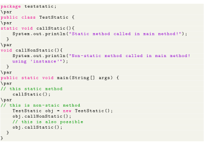

Next: Binding process Up: Static vs. Non-static routines Previous: Accessing members and methods Contents
In static method, The memory of a static method is fixed in the ram, for this reason we don’t need the object of a class in which the static method is defined to call the static method. To call the method we need to write the name of the method followed by the class name. In non-static method, the memory of non-static method is not fixed in the RAM, so we need class object to call a non-static method. To call the method we need to write the name of the method followed by the class object name.
